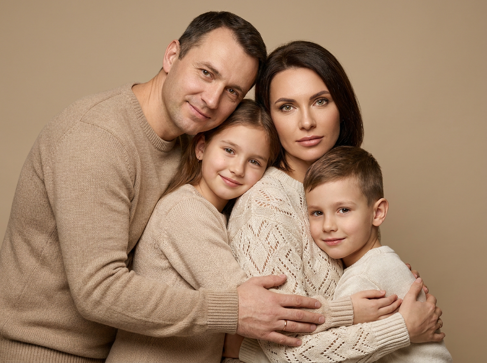
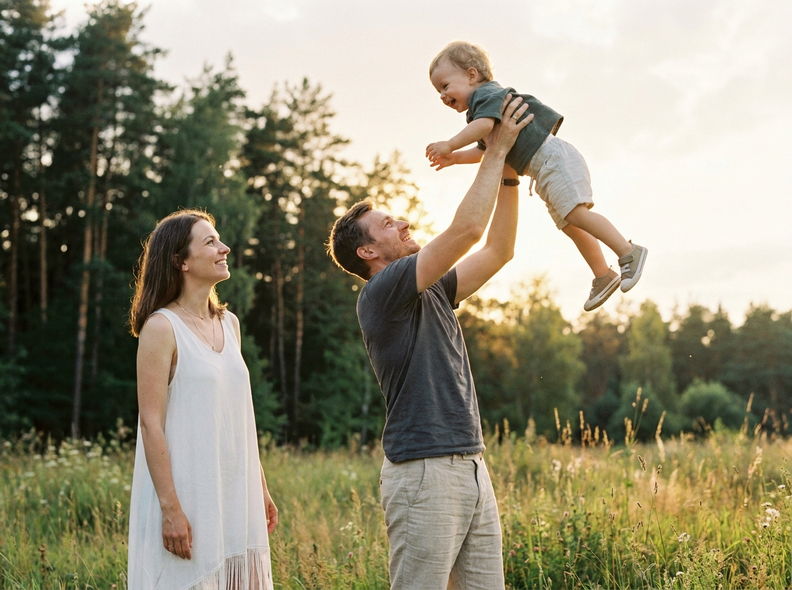
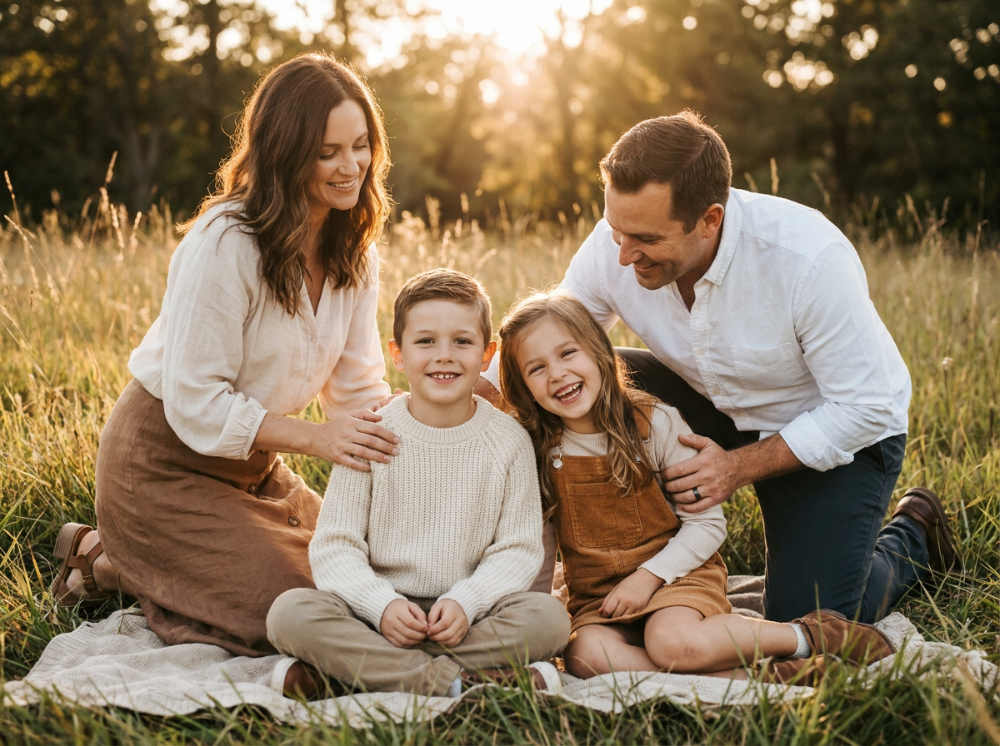
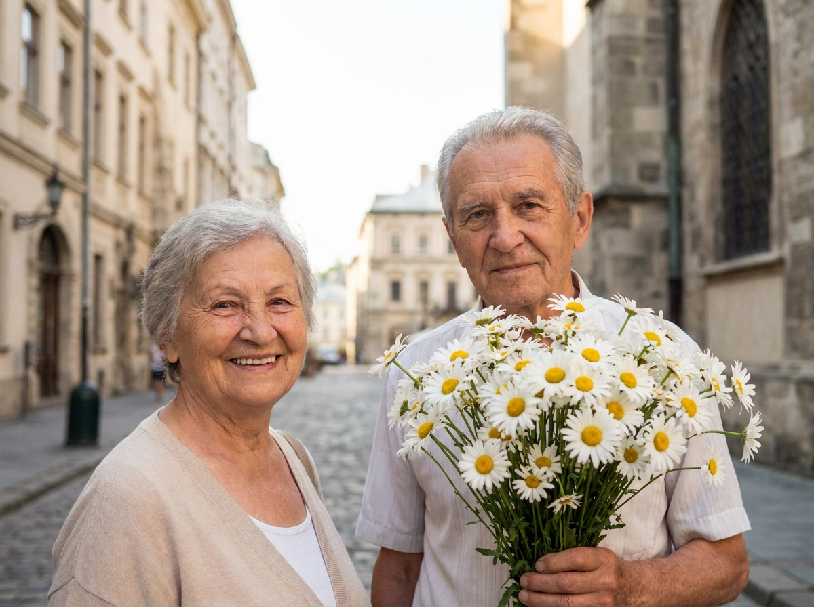
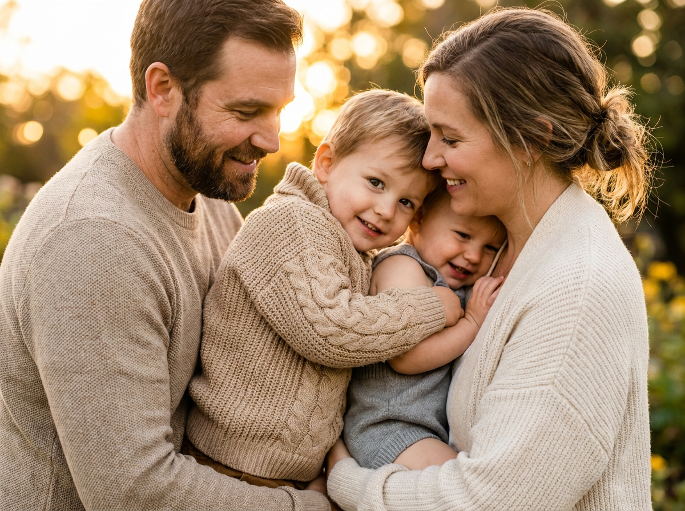
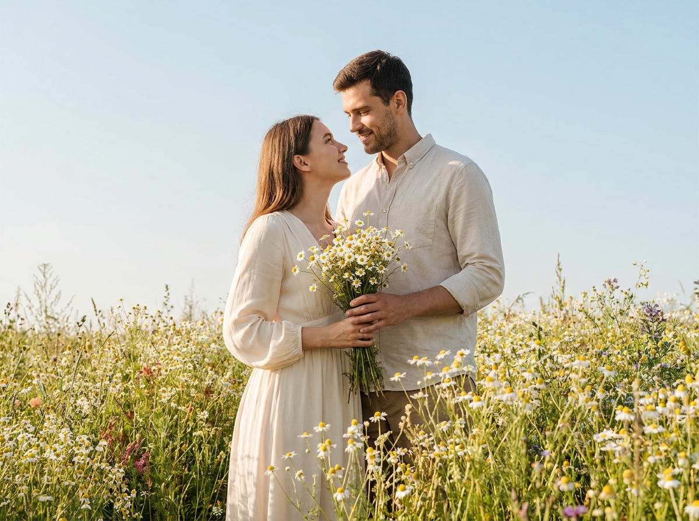
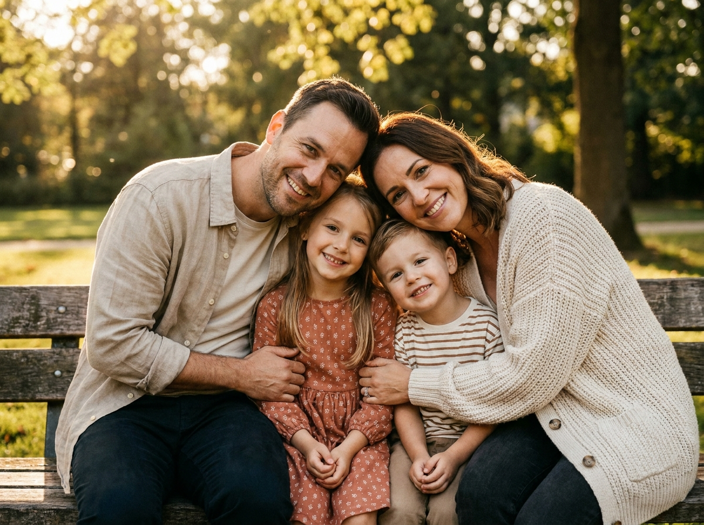
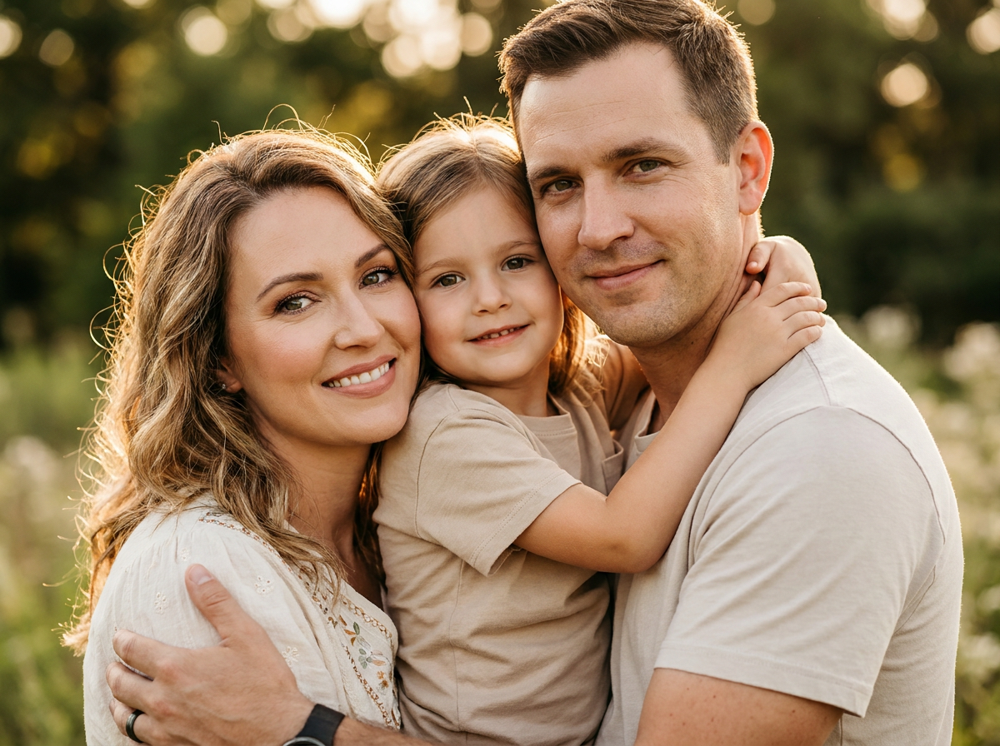
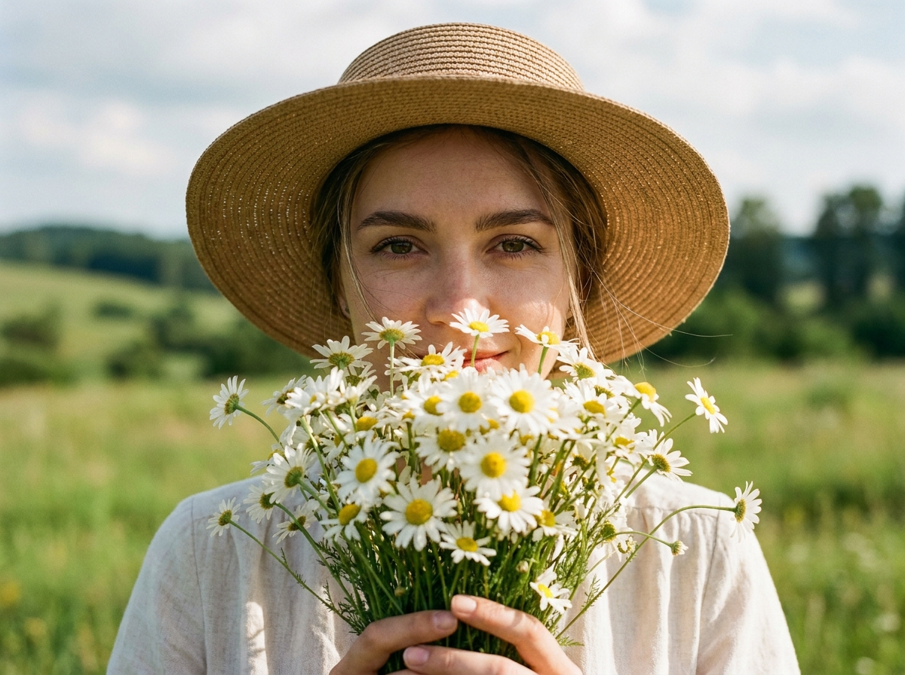
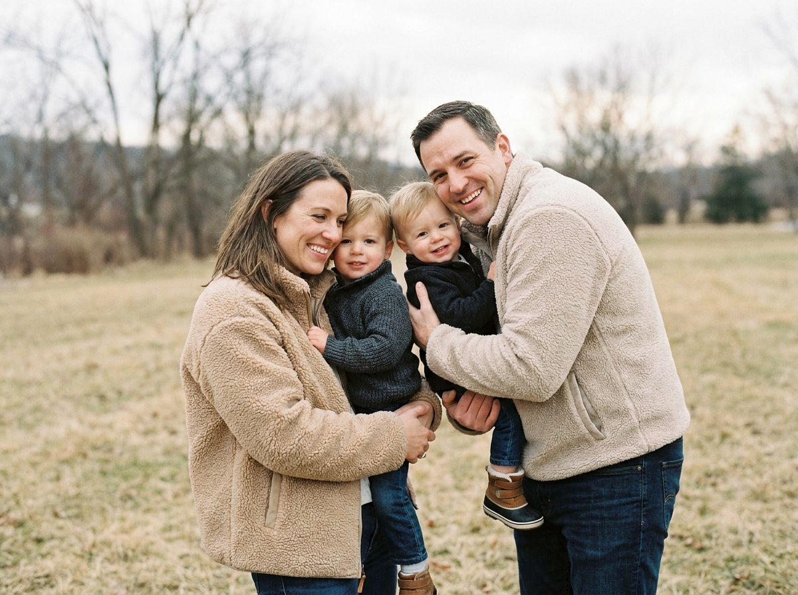

День семьи: 10 промптов для нейросети и ИИ-фото

Семейный снимок хочется сделать тёплым и живым, но в обычной фотосессии не всегда совпадают погода, настроение и свободное время всех близких. Генерация помогает собрать нужную сцену заранее: от уютного портрета в свитерах до прогулки с ромашками.
В подборке - 10 промптов ко Дню семьи, любви и верности. Здесь есть студийные и природные портреты, пикник на закате, объятия родителей с детьми, фото пожилой пары и романтичные кадры в поле цветов.
Как сгенерировать такое фото: пошагово
Нужен снимок анфас при ровном свете, лицо в кадре целиком, без тёмных очков и головных уборов. Разрешение от 1000 пикселей по короткой стороне. Чем чётче исходник, тем точнее модель повторит черты.
Выберите сценарий ниже и нажмите «Копировать» - текст уйдёт в буфер целиком, вместе с командой сохранения внешности. Эта команда стоит первой строкой и отвечает за то, чтобы на выходе было ваше лицо, а не случайное.
Кнопка «Сгенерировать» рядом с каждым промптом открывает модель в новой вкладке. Nano Banana Pro работает с референсом лица - в отличие от моделей, которые генерируют портрет с нуля и узнаваемость теряют.
Промпт - в поле ввода, портрет - через загрузку референса. Порядок значения не имеет, но без референса команда сохранения внешности работать не будет: модели нечего сохранять.
Для сторис и ленты берите 9:16, для превью и обложек - 4:3. Первый результат редко идеален: если поза или свет ушли не туда, поправьте соответствующую часть промпта и запустите заново. Обычно хватает двух-трёх итераций.
10 промптов для генерации
1. Тёплый семейный портрет
Строго сохранить внешность по загруженному референсу: черты лица, пропорции, мимику и текстуру кожи без изменений. Создайте фотореалистичный студийный портрет семьи из четырёх человек: мужчина, женщина, девочка и мальчик стоят и сидят очень близко, поддерживая друг друга в мягком объятии. Используйте лица с загруженного референса, точно передайте глаза, брови, нос, губы, овал лица, мимику и пропорции без изменения внешности. Мужчина в бежевом фактурном вязаном свитере слегка наклонён вперёд и улыбается. Женщина в молочном свитере с узором спокойно смотрит в объектив. Девочка в светло-бежевом трикотаже прижата к родителям, мальчик в кремовом свитере сидит спереди и слегка улыбается. Центральная треугольная композиция, лица резкие, руки и объятия хорошо видны. Мягкий студийный свет, натуральная кожа, объектив 85 мм, f/2.8, вертикальный кадр, высокая детализация.
2. Папа поднимает малыша

Строго сохранить внешность по загруженному референсу: черты лица, пропорции, мимику и текстуру кожи без изменений. Снимите фотореалистичную lifestyle-фотографию семьи из трёх человек на лугу у леса в ранний вечер. Папа находится в центре и чуть отклоняется назад, высоко поднимая малыша вытянутыми руками. Ребёнок парит над ним: ноги свободно движутся в полёте, пальцы естественно разведены, лицо повернуто вниз к родителям, малыш смеётся. Мама стоит на левом переднем плане в траве, расслабленно наблюдает за сценой с нежной улыбкой. Камера расположена низко, почти на уровне земли, с лёгким ракурсом снизу, чтобы подчеркнуть высоту подъёма. Передайте лица по референсу, сохранив индивидуальные черты, мимику и пропорции. Золотой час, тёплая плёночная цветокоррекция, мягкий фон, живые эмоции, вертикальный формат 4:5, объектив 35 мм, f/2.8.
3. Пикник в высокой траве

Строго сохранить внешность по загруженному референсу: черты лица, пропорции, мимику и текстуру кожи без изменений. Сгенерируйте фотореалистичный вертикальный кадр семейного пикника в лесопарке на закате. Четыре человека сидят на светлом пледе среди высокой травы. На переднем плане - мальчик слева, он сидит ровно, немного развёрнут к камере, улыбается, руки спокойно лежат на коленях или ткани. Рядом справа сидит девочка, наклонившись вперёд и широко смеясь. Позади детей мама мягко улыбается и наклоняет корпус к ним, поддерживая одной рукой; отец находится рядом и заботливо обнимает семью. Лица должны соответствовать загруженному референсу: без изменения формы глаз, носа, губ, овала и естественной мимики. Атмосфера candid lifestyle, тёплый golden hour, лёгкое боке, кинематографичная цветокоррекция, естественная трава и ткань, объектив 50 мм, f/2, вертикальное соотношение 4:5.
4. Ромашки для долгой любви

Строго сохранить внешность по загруженному референсу: черты лица, пропорции, мимику и текстуру кожи без изменений. Обработайте фотографию пожилой пары на улице старого города в стиле реалистичной праздничной открытки. Женщина стоит слева и улыбается, мужчина справа держит в центре большой букет белых ромашек. Сохраните настоящие лица, возраст, мимику, причёски, форму ушей, пропорции тела и рук, не меняйте личность людей. Архитектуру старого города оставьте без новых прохожих и предметов. Сделайте тёплый баланс белого, мягкий контраст, натуральную кожу без пластиковой ретуши и высокую детализацию лиц и цветов. Белые лепестки пусть выглядят чистыми и объёмными, задний план слегка приглушите боке, чтобы букет стал главным акцентом. Сохраните документальный фотореализм, без рисованного эффекта и чрезмерной резкости. Оставьте свободную область сверху или в нижней трети под будущую надпись, но не добавляйте текст. Объектив 85 мм, f/2.8.
5. Объятия всей семьи

Строго сохранить внешность по загруженному референсу: черты лица, пропорции, мимику и текстуру кожи без изменений. Сделайте крупный фотореалистичный семейный снимок в момент нежного объятия. В кадре отец, мать и двое детей: один ребёнок крепко прижат спереди, второй обнимается рядом. Отец слева смотрит вниз на детей с очень тёплым спокойным выражением; на нём бежевый или серо-коричневый свитер. Мать справа и немного между членами семьи наклоняется к детям, улыбается глазами, одета в уютную светлую одежду нейтрального оттенка. Центральный ребёнок - маленькая девочка в песочном трикотажном джемпере, с чуть розовыми щеками, крепко обнимает родителя. Второй ребёнок виден рядом и тоже тянется к семье. Используйте лица с референса, сохраняя черты и естественные пропорции. Тесная композиция, видимые руки, мягкий рассеянный свет, натуральная кожа, малая глубина резкости, объектив 85 мм, f/2, вертикальный кадр.
6. Пара среди ромашек

Строго сохранить внешность по загруженному референсу: черты лица, пропорции, мимику и текстуру кожи без изменений. Создайте фотореалистичный романтичный портрет молодой пары в цветущем поле ромашек и полевых цветов. Мужчина и девушка стоят среди высоких растений и смотрят друг на друга с теплом и любовью. Девушка держит букет белых ромашек, часть цветов находится на переднем плане. Над головами чистое голубое небо, в композиции много воздуха и света. Используйте естественный дневной свет без жёстких теней, нежную праздничную атмосферу и натуральную цветопередачу. Сохраните лица по загруженному референсу, включая индивидуальные черты, мимику и пропорции. Стиль editorial romantic photography, ультрареалистичная кожа, высокая детализация лепестков и ткани, мягкие пастельные оттенки, лёгкое размытие дальнего плана. Вертикальный формат 4:5, объектив 50 мм, f/2.8, разрешение 8K.
7. Семья в золотом свете

Строго сохранить внешность по загруженному референсу: черты лица, пропорции, мимику и текстуру кожи без изменений. Снимите фотореалистичный вертикальный семейный портрет на природе во время golden hour. Отец слева, в центре группы, одет в песочную рубашку или лёгкую куртку поверх светлой футболки; он мягко улыбается и слегка поворачивает лицо к семье. Мать справа в светлом молочном кардигане держится близко к детям и обнимает их. Девочка расположена слева на переднем плане, радостно улыбается. Второй ребёнок сидит или прислоняется к взрослым, а родители поддерживают обоих, создавая плотную позу «объятие и забота». Все смотрят в камеру. Передайте лица с референса без изменения глаз, носа, губ, овала лица, мимики и возраста. Тёплая киношная цветокоррекция, мягкий солнечный контровой свет, естественная кожа, фон с лёгким боке, объектив 50 мм, f/2.2, вертикальный кадр 4:5.
8. Родители обнимают дочку

Строго сохранить внешность по загруженному референсу: черты лица, пропорции, мимику и текстуру кожи без изменений. Сгенерируйте крупный вертикальный фотореалистичный портрет семьи из трёх человек на природе в золотой час. Женщина слева смотрит в камеру и мягко улыбается; на ней светлое платье или топ кремового оттенка с перфорацией либо вышивкой, волосы частично подсвечены солнцем. В центре находится маленькая девочка в светлой футболке песочного или кремового цвета, она прижата между родителями, смотрит в объектив и слегка улыбается. Справа стоит отец в светло-бежевой футболке, обнимает ребёнка и немного наклоняется к ней, сохраняя тёплое выражение лица. Руки взрослых должны быть видны, объятие выглядит естественно, без постановочной напряжённости. Используйте внешность с загруженного референса, сохранив черты и пропорции. Тёплый солнечный свет, натуральная кожа, мягкое боке, объектив 85 мм, f/2, вертикальный формат 4:5.
9. Девушка с букетом ромашек

Строго сохранить внешность по загруженному референсу: черты лица, пропорции, мимику и текстуру кожи без изменений. Создайте фотореалистичный летний портрет девушки на улице в солнечный день. Она держит перед лицом большой букет белых ромашек с жёлтыми серединками: цветы закрывают нижнюю часть лица, но по щеке и губам заметна лёгкая улыбка. Выразительные глаза смотрят прямо в камеру, кожа имеет натуральную текстуру, макияж мягкий, брови аккуратно подчёркнуты. На девушке широкополая соломенная шляпа светло-золотистого цвета с хорошо заметным плетёным узором; она закрывает верхнюю часть лба и отбрасывает мягкую тень без пересветов. Несколько прядей выглядывают из-под шляпы и слегка развеваются ветром. Букет занимает центральную часть композиции и остаётся главным акцентом. Используйте лицо с референса без изменения внешности. Sunny day, cinematic color grading, объектив 85 мм, f/2.8, вертикальный портрет, высокая детализация.
10. Уютная прогулка семьёй

Строго сохранить внешность по загруженному референсу: черты лица, пропорции, мимику и текстуру кожи без изменений. Сделайте фотореалистичную candid-фотографию семьи из четырёх человек на природе ранней весной или осенью. Воздух прохладный, дневной свет мягкий, одежда и поза создают ощущение уютной съёмки на плэнере. Семья стоит близко к камере, снята с уровня глаз в вертикальном формате. Мама слева плечом и рукой прижимает к себе ребёнка. Отец справа обнимает обоих, смотрит в объектив или немного в сторону и радостно улыбается. В центре находится маленький мальчик: он на руках или между родителями, прижимается к ним, улыбается, одна рука и ноги лежат естественно, без деформаций. Четвёртый член семьи расположен рядом и включён в общее объятие. Сохраните лица с референса, индивидуальные черты, мимику и пропорции без изменений. Натуральные цвета, мягкий фон, объектив 50 мм, f/2.8, лёгкий наклон корпуса, вертикальный кадр 4:5.
Что важно учесть в этом стиле
Для семейного ИИ-фото лучше заранее определить формат: вертикальный 4:5 под публикацию или 9:16 для сторис. Крупный план требует точных лиц и рук, а сюжет с прогулкой - понятного описания пространства, света и положения каждого человека.
Референс помогает сохранить узнаваемость, но не гарантирует идеальный результат с первой попытки. Особенно внимательно проверяйте пальцы, объятия, глаза и возраст персонажей. Для естественной картинки полезно указывать объектив: 50 мм даёт универсальную перспективу, 85 мм подходит для портрета, а 35 мм лучше передаёт сцену целиком.
Идеи для вариаций
- Замените золотой час на мягкий утренний туман или пасмурный свет без резких теней.
- Добавьте семейную надпись в свободной зоне кадра уже после генерации.
- Попросите нейросеть сделать серию из пяти кадров с разными естественными эмоциями.
- Перенесите пикник на деревянную веранду, берег озера или дачный сад.
- Поменяйте ромашки на полевые васильки, сохранив бело-жёлтую цветовую гамму.
Как собрать свой промпт
Начните с типа снимка и состава семьи: портрет, прогулка или репортажный момент, затем перечислите людей слева направо и опишите их действия. После этого добавьте одежду, эмоции, фон и источник света. Такой порядок уменьшает путаницу между персонажами.
В финале укажите технические параметры: вертикальный формат, фокусное расстояние, диафрагму, характер боке и цветокоррекцию. Для сложной сцены закладывайте 3–6 генераций, а затем уточняйте только проблемный фрагмент: руки, выражение лица или положение ребёнка.
Ошибки, из-за которых кадр не получается
- Слишком много персонажей без координат. Нейросеть путает людей, если не указать, кто находится слева, справа, в центре и на заднем плане.
- Противоречивые эмоции. Одновременные требования «все смеются» и «спокойно смотрят» могут дать неестественную мимику.
- Не описаны руки. В сценах с объятиями и ребёнком обязательно задавайте положение кистей и поддерживающих жестов.
- Нет ограничений для фона. Попросите не добавлять людей, предметы и текст, если оставляете место под открытку.
- Слишком сильная ретушь. Формулировки про идеальную кожу часто убирают естественную текстуру и делают лица пластиковыми.
Частые вопросы
Как сделать такое ИИ-фото бесплатно?
Попробуйте Kandinsky и Шедеврум: у них есть бесплатная генерация, но число попыток, скорость и качество могут меняться. Krea AI и Arena.ai позволяют тестировать разные модели, однако работа с референсом, точное сохранение лица и разрешение зависят от конкретного режима. Бесплатные варианты не всегда хорошо справляются с несколькими людьми, руками и сложными объятиями, поэтому результат может потребовать нескольких перегенераций.
Как сохранить лица близких похожими на референс?
Загрузите чёткий снимок без фильтров, где лицо хорошо освещено и видно прямо. В промпте опишите, что внешность, возраст, форма глаз, носа, губ и овал лица должны сохраняться. Для группового кадра лучше использовать один референс с хорошо различимыми лицами и проверять результат по отдельным деталям.
Почему нейросеть искажает руки и объятия?
Пересечения рук, пальцев и одежды относятся к самым сложным элементам для генерации. Опишите, какая рука кого держит, где находятся ладони и сколько пальцев должно быть видно. Если ошибка сохраняется, сначала сгенерируйте более простую позу, а затем исправьте руки встроенным редактированием.
Как подготовить ИИ-фото для открытки ко Дню семьи?
Выберите вертикальный формат, оставьте свободное пространство сверху или в нижней трети и отдельно запретите генерацию текста. Надпись лучше добавить после получения изображения: так буквы не превратятся в случайные символы. Для печати используйте максимальное доступное разрешение и проверьте, чтобы лица не оказались слишком близко к краям.